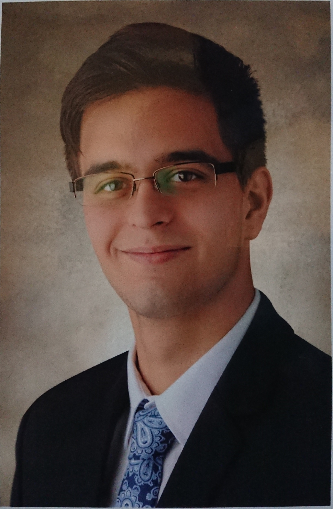

 "Curriculum Vitae"
Az én nevem Mező Péter Bálint, a Budapesti Műszaki- és Gazdaságtudományi Egyetem gépészmérnök alapszakos hallgatója vagyok. Ötödik félévemet végzem az egyetemen és gépgyártás technológiára specializálódtam. Szabadidőmet gyakran számítógépezéssel és testmozgással töltöm. Kedvenc sportjaim az úszás, tenniszezés, focilabdázás, futás. Az az Álmom, hogy a visszaeső bűnözők megkapják a büntetésüket és legyen Világbéke!